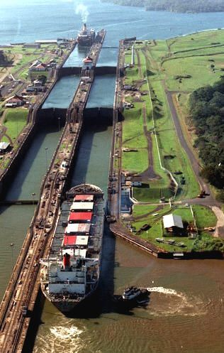
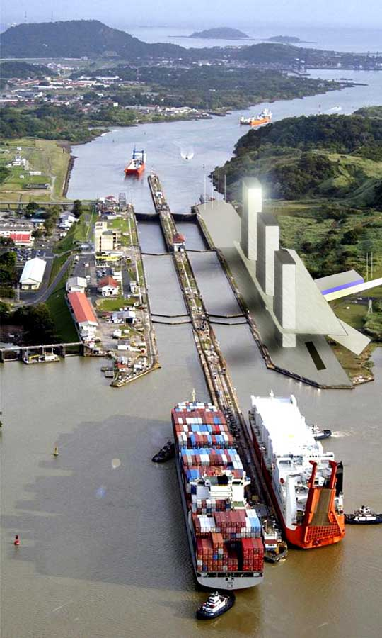

Canal do Panamá
Quem iniciou a construção do canal foi a França, em 1881. A obra foi assumida em 1903 pelos EUA que controlaram o canal até 1999, quando a administração foi transferida para o Panamá, que hoje lucra até US$ 1,7 bilhão por ano com ele.
Graças ao canal do Panamá, os navios podem atravessar em dez horas uma faixa de terra de 80 km na América Central que separa o Atlântico do Pacífico. Leva-se em torno de duas semanas para contornar a América do Sul.
Taxas de travessia
Variam entre US$ 2,6 mil e US$ 800 mil. O preço depende do tipo de embarcação, da carga e até do nível da água do lago. É como comprar passagem aérea: quem reserva com antecedência ganha um desconto. O valor mais baixo foi de US$ 0,36, em 1928, para o escritor Richard Halliburton - ele atravessou nadando.
As eclusas
Tanto o acesse do Pacífico quanto o do Atlântico têm eclusas: a original e a nova, inaugurada em 2016 para navios maiores. A eclusa antiga drena a água do lago para erguer os navios. Depois ela é escoada no oceano: despejam 7,5 bilhões de litros por dia.
Manobristas
No início da travessia, um funcionário da Autoridade do Canal do Panamá (ACP) embarca e assume o controle do navio. Dentro da eclusa, navios grandes são puxados por locomotivas que correm em trilhos nas margens. As embarcações que chegam sem marcar hora precisam esperar na fila, que pode levar dias.
Localização